Soluciones saludables para niños, adolescentes y familias
Psicoterapia, terapia ABA, evaluaciones y talleres para padres en un centro bilingüe de Doral. Te acompañamos en cada etapa de la vida.
- Español e inglés
- Niños, adolescentes, adultos y familias
- Aetna, BCBS, Cigna y UnitedHealthcare
¿Para quién buscas apoyo?
Elige una opción y te mostramos por dónde empezar. Toma unos diez segundos.
¿Qué es lo que más te preocupa ahora?
Por aquí podrías empezar
Es un punto de partida, no un diagnóstico. Cuando nos llames, te escuchamos y te recomendamos el siguiente paso.
Novedades
Psicoterapia
Intervenciones para ayudar a niños y adultos con diferentes trastornos y conductas desafiantes persistentes, con terapia individual, grupal y familiar, adaptada a las necesidades de cada persona.
Más informaciónTalleres
Estrategias para promover el crecimiento social y emocional de los niños, mejorar las interacciones positivas y reducir conductas negativas como el acoso escolar.
Más información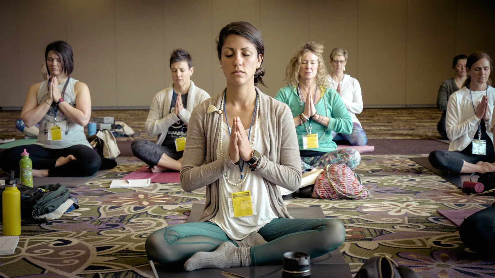
Yoga reflexivo
Un espacio para conectar el cuerpo físico con la calidad del ser, con técnicas lingüísticas que ayudan a provocar avances y transformaciones en la vida.
Más información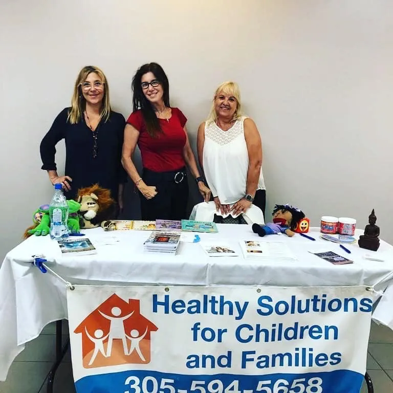
¿Qué hacemos y cómo podemos ayudarte?
¿Qué hacemos?
Trabajamos para mejorar el bienestar emocional, conductual y social de personas de diferentes edades y grupos: promovemos la salud mental, ayudamos a prevenir que los problemas aparezcan o empeoren y abordamos los problemas de conducta cuando es posible.
¿Cómo te ayudamos?
Nuestros profesionales de salud mental se comprometen a ofrecer servicios de calidad, guiando a cada persona a enfrentar la vida de manera efectiva, manejar el estrés y construir relaciones positivas con los demás.
Nuestra labor
Los talleres y charlas apuntan a un cambio de paradigma: comprender que los hijos son maestros que invitan a los padres a detenerse, mirarse y reconocerse.
Nuestro objetivo es que los padres aprendan a abrirse a las diferentes problemáticas desde un lugar compasivo, de aceptación y escucha, para ir descubriendo lo que llevará a cada uno a recorrer un camino de crecimiento y transformación. En los talleres compartimos estrategias y herramientas que dan a padres e hijos la oportunidad de ser exitosos en un ambiente seguro, y el coaching ayuda a los hijos a prepararse para enfrentar sus desafíos.
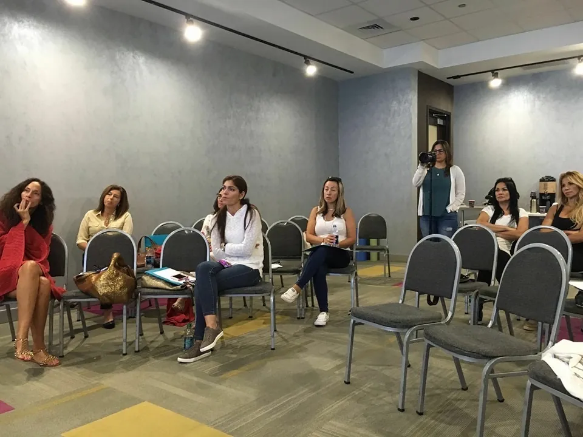
Regálate un minuto de calma
Presiona el botón y sigue la casita mientras crece y se acomoda. Inhala mientras sube, sostén el aire y suéltalo despacio. A los niños también les encanta.
Conoce a nuestro staff
Un equipo bilingüe con formación en psicología, trabajo social, análisis de conducta, consejería, coaching e hipnosis clínica.


Testimonios
Lo que nos han compartido algunas de las familias que nos visitaron.
Me recomendaron mucho a Andrea, una amiga que había atendido a su hijo adolescente quedó feliz con ella.
Leer másLeer menos
Me recomendaron mucho a Andrea, una amiga que había atendido a su hijo adolescente quedó feliz con ella. La llamé porque tenía varios problemas con mi hijo adolescente y, al mismo tiempo, un divorcio muy tóxico. Me sentía extremadamente mal, pues eran muchas situaciones muy complejas.
Andrea nos atendió a ambos. Me impresionó su increíble habilidad, sus herramientas y su conocimiento para ayudarnos a salir del shock en el que nos encontrábamos. Logró estabilizar a mi hijo y me hizo entender el proceso de la adolescencia y cambiar patrones y conductas que no nos servían ni a mi hijo ni a mí. Nos sacó de un lugar muy oscuro a un lugar lleno de amor y esperanza. Andrea, gracias por todo lo que has hecho por nosotros.
Este testimonio me llena de alegría compartirlo. Después de encontrarme en un estado de agotamiento emocional severo…
Leer másLeer menos
Este testimonio me llena de alegría compartirlo. Después de encontrarme en un estado de agotamiento emocional severo, convencida de que me sentía inhabilitada y completamente perdida como madre, recordé que tenía una amiga con conocimiento y experiencia profesional para mostrarme una salida.
Andrea no solo me recordó que yo sí sabía y podía ser la mejor madre para mi hijo adolescente, sino que mi hijo y yo sí teníamos el vínculo para superar esta etapa difícil y cualquier otra que nos presentara la vida. Pude recuperar la fuerza de mi corazón de madre para guiar a mi hijo por el camino de la educación amorosa, sin olvidar los límites que él también necesita. ¡Me devolvió la paz!
Llegué hasta Andrea por una necesidad de poner en orden mis ideas, actitudes y vivencias…
Leer másLeer menos
Llegué hasta Andrea por una necesidad de poner en orden mis ideas, actitudes y vivencias. Estaba un poco perdida, pero con un objetivo claro: sabía cuál era mi meta, pero no sabía encontrar las herramientas.
Andrea me ayudó de una manera sencilla pero intensa. Nunca me dijo lo que debía o no hacer; me hacía pensar, pensar en positivo, y me motivaba para alcanzar esa meta. Como siempre me decía en las sesiones: «yo no te voy a dar la solución, la solución la tenés vos ahí dentro». Y fue cierto: la tenía yo, y la encontré con su ayuda. La experiencia fue intensa y gratificante.
Aliados
Trabajamos con estos planes de seguro. Llámanos para confirmar tu cobertura antes de tu primera cita.
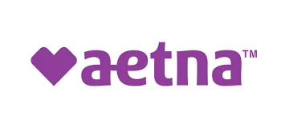
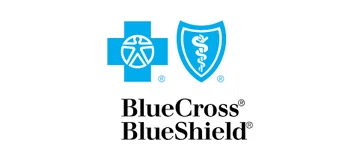
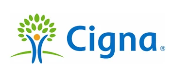
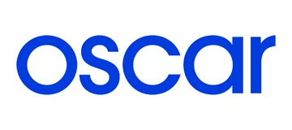
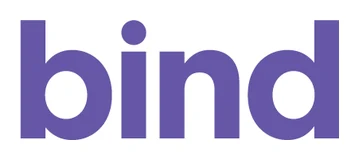
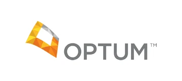
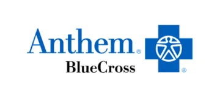
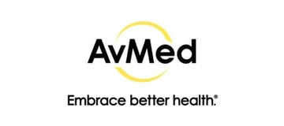
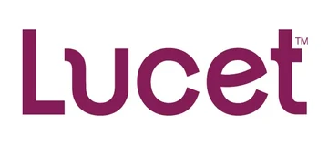

Hablemos sobre Ansiedad
Acompáñanos el sábado 24 de octubre de 3 a 5 PM en el Florida Blue Center de Hialeah para un taller gratuito sobre ansiedad, en español.
Preguntas frecuentes
¿Qué seguros aceptan?
Estamos dentro de la red de Aetna, Blue Cross Blue Shield, Cigna y UnitedHealthcare, y también trabajamos con Oscar y Bind. No aceptamos TRICARE ni planes afiliados a esa red. Llámanos para confirmar tu cobertura.
¿Hay opciones si no uso seguro?
Sí. Ofrecemos paquetes privados de salud mental de 8, 12 o 16 sesiones, una vez por semana, con una duración de dos, tres o cuatro meses.
¿Qué evaluaciones ofrecen?
Evaluaciones para personas de 2 a 21 años: evaluación del desarrollo (CSBS DP, de 0 a 5 años), neuropsicológica, de autismo, psicoeducativa y de altas capacidades. También hacemos evaluaciones psicológicas para adultos.
¿Atienden en español?
Sí. Somos un equipo bilingüe y atendemos en español y en inglés. Una de nuestras terapeutas también atiende en portugués.
¿Ofrecen terapia ABA?
Sí. Ofrecemos terapia de Análisis Conductual Aplicado (ABA) para ayudar a desarrollar la comunicación, las habilidades sociales y la independencia, sobre todo en niños con autismo y otras condiciones del desarrollo.
¿Dónde están?
En el 8245 NW 36th Street, Suite 7, Doral, FL 33166. Puedes llamarnos al (305) 594-5658 o al (786) 423-9495.
Contacto
Llámanos o escríbenos. Estamos en Doral, en el 8245 NW 36th Street, Suite 7.
- Llámanos(305) 594-5658
(786) 423-9495 - Escríbenosinfo@hscfdoral.com
- Visítanos8245 NW 36th St, Suite 7Doral, FL 33166